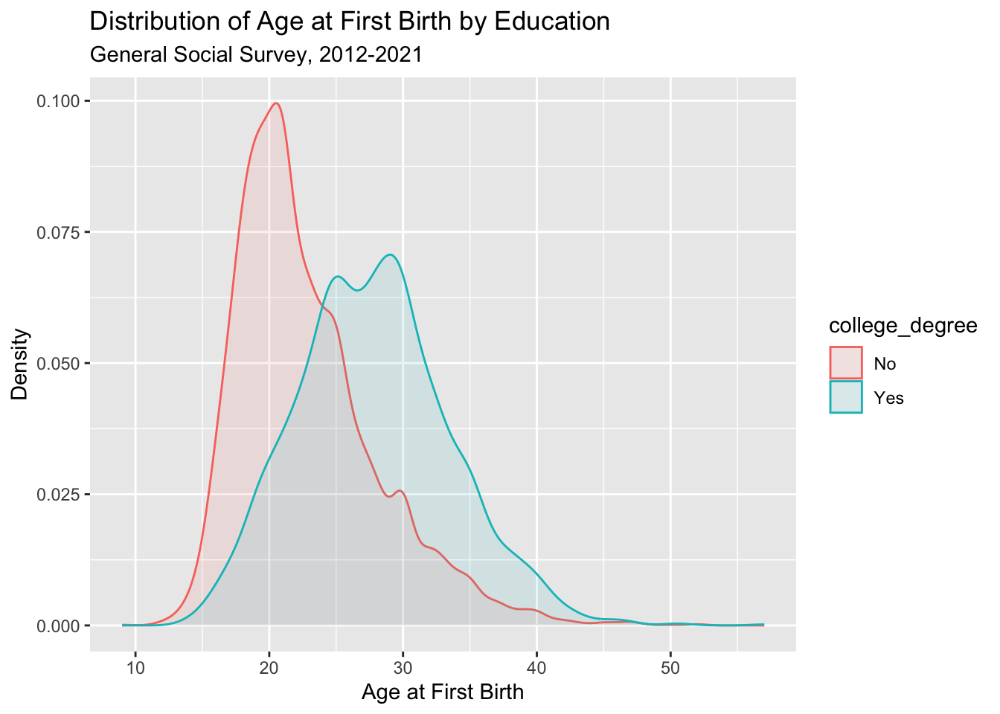

library(tidyverse)
gss_week3 <- read_csv("https://raw.githubusercontent.com/mjclawrence/soci385_f23/main/data/gss_week3.csv")Visualizing Descriptives
Setting Up
This week we will continue using the 2012-2021 waves of the General Social Survey. We are still focused on the agekdbrn variable and will start looking at how its distribution varies by education and race/ethnicity. Start by loading tidyverse and the data.
Start with a summary of the agekdbrn variable
REPLACE THIS LINE WITH YOUR CODE CHUNK
summary(gss_week3$agekdbrn) Min. 1st Qu. Median Mean 3rd Qu. Max.
9.00 20.00 23.00 24.27 28.00 57.00 Variance and Standard Deviation
To find the variance, use var(). To find the standard deviation, use sd().
var(gss_week3$agekdbrn)[1] 34.52177sd(gss_week3$agekdbrn)[1] 5.875523Would you expect more or less variation in the education distribution?
REPLACE THIS LINE WITH YOUR CODE
var(gss_week3$educ)[1] 9.563199sd(gss_week3$educ)[1] 3.092442Introducing ggplot2
Let’s look at some visualizations of the distribution of age at first birth. There are two main types of visualizations you can make with R: base graphics and ggplot2 graphics. We are going to focus on ggplot2, one of the packages that loads with the tidyverse.
The “grammar of graphics” that ggplot is built on creates graphics layer by layer, mapping aesthetics and options on top of other layers. Let’s see how this works in a very basic density plot.
The first step is to name our figure. In this example, we’ll save it as an object called agekdbrn_plot. The right side of the following chunk says that we will be using the ggplot functions with the gss_week3 data frame, and the aes parentheses is where we define the aesthetics we want on the x and y axes. For this initial plot, we will only have a variable on the x axis.
agekdbrn_plot <- ggplot(gss_week3, aes(x = agekdbrn))To get a sense of how plots are built layer by layer, let’s take a look at what is now connected to our object:
agekdbrn_plot
So R knows the range of our variable and has used that info to set the backdrop for our plot. The next step is to add a layer on top of this. We use our existing object name and add the geometric feature we want. In this example, we will look at a density plot:
agekdbrn_plot + geom_density()
What is this distribution telling us? How would you define the shape and the skew?
There are many ways to improve this plot. We’ll start simply by changing the axis labels and adding a title. If you are making all of these changes, the easiest thing to do is to use the labs() function:
agekdbrn_plot + geom_density() +
labs(x = "Age at First Birth", y = "Density",
title = "Distribution of Age at First Birth",
subtitle = "General Social Survey, 2012-2021",
caption = "SOCI 385 Fall 2023")
Two other visualizations that are good for looking at distributions are bar plots and histograms. These use geom_bar and geom_histogram respectively. Try them out by editing the last code chunk we ran to replace geom_density with geom_bar or geom_histogram. Try a histogram first.
REPLACE THIS LINE WITH YOUR CODE
agekdbrn_plot + geom_histogram() +
labs (x = "Age at First Birth", y = "Count",
title = "Distribution of Age at First Birth",
subtitle = "General Social Survey, 2012-2021",
caption = "SOCI 385 Fall 2023")`stat_bin()` using `bins = 30`. Pick better value with `binwidth`.
The warning message about binwidth with the histogram is asking you to choose how many buckets you want the data grouped by. See what happens as you increase and decrease the number of bins:
agekdbrn_plot + geom_histogram(bins = 100) +
labs (x = "Age at First Birth", y = "Count",
title = "Distribution of Age at First Birth",
subtitle = "GSS, 2012-2021")
And a bar plot.
agekdbrn_plot + geom_bar() +
labs (x = "Age at First Birth", y = "Count",
title = "Distribution of Age at First Birth",
subtitle = "General Social Survey, 2012-2021")
Now try a bar plot showing the distribution of the educ variable.
REPLACE THIS LINE WITH YOUR CODE
educ_barplot <- ggplot(gss_week3, aes(x = educ))
educ_barplot + geom_bar() +
labs(x = "Years of Education",
y = "Count",
title = "Distribution of Years of Education",
subtitle = "GSS, 2012-2021",
caption = "SOCI 385 Fall 2023")
Creating Categories
The plots above have visualized the distributions across all respondents. But sociologists often work with data that are best represented categorically. What if we want to compare distributions across groups of respondents?
Suppose we want to compare the distribution of age at first birth across education groups. How would you expect the distribution to vary?
We already know how to use indexing or the group_by() function to get the values of one variable for observations that have specific values of another variable. Either would be a good start for finding the average age at first birth for different ranges of the education distribution. But it would be more helpful if we could collapse the values of the education variable into categories.
Let’s start with a binary variable distinguishing respondents with college degrees from respondents without college degrees. We can do this using mutate() and the ifelse() function. In this example, we’ll create a new variable called college_degree and we’ll put it in the gss_week3 data frame.
gss_week3 <- gss_week3 |>
mutate(college_degree = ifelse(educ>=16, 1, 0))Read the mutate line as:
“In the gss_week3 dataframe, create a new variable called college_degree based on existing values in the gss_week3 dataframe. If the value of the educ variable is greater than or equal to 16, the new variable’s value should be 1. If the value of the education variable is anything else, the new variable’s value should be 0.”
Sometimes it can be easier to write this in multiple lines so you can annotate the code:
gss_week3 <- gss_week3 |> # the data frame
mutate(college_degree = # create a variable with this name
ifelse(educ>=16, # if this condition is true...
1, # the observation should take this value...
0)) # if the condition is not true the observation takes this valueThe mean of a binary variable is the proportion with a 1. Use this new variable to find the proportion of respondents with a college degree.
REPLACE THIS LINE WITH YOUR CODE
summary(gss_week3$college_degree) Min. 1st Qu. Median Mean 3rd Qu. Max.
0.0000 0.0000 0.0000 0.2917 1.0000 1.0000 Binary variables with 0s and 1s are very helpful. For plotting, though, factor variables are better. We can use mutate() again to assert that we want college_degree to be a factor variable, and we will add the labels = c() option to label 0 “No” and 1 “Yes”.
gss_week3 <- gss_week3 |>
mutate(college_degree = factor(college_degree,
labels = c("No", "Yes")))A proportion table should show the same proportions of respondents with college degrees that we saw above with the binary variable.
round(prop.table(table(gss_week3$college_degree)),3)
No Yes
0.708 0.292 Now let’s make a density plot with two curves: one for respondents without college degrees and one for respondents with college degrees. We will add the color = option to the aesthetic mapping to assert that we want each curve outlined in a different color based on the two values of the college_degree variable.
agekdbrn_college_plot <- ggplot(gss_week3,
aes(x = agekdbrn,
color = college_degree))
agekdbrn_college_plot + geom_density()
How could we improve this plot? Let’s color in the areas under the curves using the fill = option. Let’s use alpha = to adjust the transparency of the overlapping density curves so they do not completely cover each other. And let’s fix the labels.
agekdbrn_college_plot <- ggplot(gss_week3,
aes(x = agekdbrn,
color = college_degree,
fill = college_degree))
agekdbrn_college_plot + geom_density(alpha = .1) +
labs(x = "Age at First Birth",
y = "Density",
title = "Distribution of Age at First Birth by Education",
subtitle = "General Social Survey, 2012-2021") 
Change legends?
agekdbrn_college_plot <- ggplot(gss_week3,
aes(x = agekdbrn,
color = college_degree,
fill = college_degree))
agekdbrn_college_plot + geom_density(alpha = 0.1) +
labs(x = "Age at First Birth",
y = "Density",
title = "Distribution of Age at First Birth by Education",
subtitle = "General Social Survey, 2012-2021") +
scale_color_discrete(name = "College Degree") +
scale_fill_discrete(guide = "none")Preview of next class with education categories…
gss_week3 <- gss_week3 |>
mutate(edcat = ifelse(educ < 12, "Less Than HS",
ifelse(educ == 12, "HS Diploma",
ifelse(educ %in% 13:15, "Some College",
ifelse(educ == 16, "College Degree",
"Grad Prof Degree")))))
gss_week3 <- gss_week3 |>
mutate(edcat = factor(edcat,
levels = c("Less Than HS",
"HS Diploma",
"Some College",
"College Degree",
"Grad Prof Degree")))
agekdbrn_edcat_plot <- ggplot(gss_week3, aes(x = agekdbrn, color = edcat))
agekdbrn_edcat_plot + geom_density() +
labs(x = "Age at First Birth",
y = "Density",
title = "Distribution of Age at First Birth by Highest Degree",
subtitle = "GSS, 2012-2021") +
scale_color_discrete(name = "Education\nCategory") +
theme(axis.title=element_text(size=14),
axis.text=element_text(size=12))